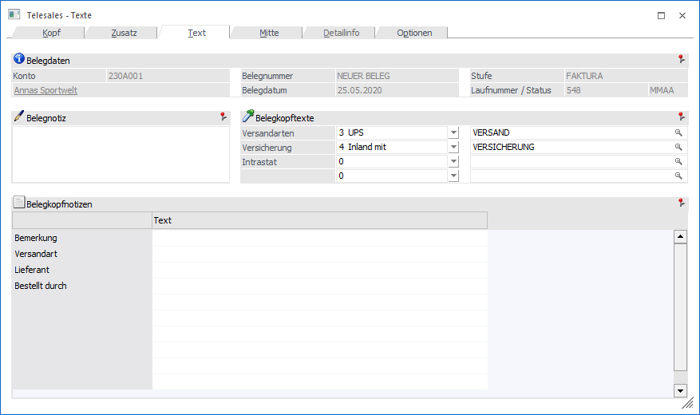

In dieser Funktion können Sie die Notizblock-Funktion der WinLine nützen und bis zu 2000 Zeichen Freitext im Belegkopf erfassen. Dieses Feld kann nicht angedruckt werden und dient nur für zusätzliche Informationen innerhalb des Beleges.

Außerdem stehen Ihnen bis zu 10 weitere Textzeilen zur Verfügung, in denen spezifische wiederkehrende Textierungen abgefragt werden können (z.B. Frachtbedingungen, Spediteur, Kurzbeschreibung des Beleginhaltes bzw. des Geschäftsfalles, etc.).
Die erste dieser 10 Zeilen ist im Belegmatch (nach Eingabe der Personenkontennummer) ersichtlich.
Die Führungstexte dieser Notizzeilen können im Programmteil WinLine START unter Optionen/FAKT-Parameter/Führungstexte f. Belegkopfnotizen erfasst werden.
Die vier Auswahllisten können von Ihnen individuell definiert werden. Sehen Sie dazu in den Menüpunkt Stammdaten/Belegkopftexte bzw. Stammdaten/Konten/Personenkonten/Register FAKT.
Nach Abschluss der Erfassungsarbeiten kann die Bearbeitung nach Drücken der OK-Taste (Maus oder F5) mit folgenden Optionen abgeschlossen werden:
Ø Rechnen
Nach Bestätigen der Option Rechnen wird der Beleg neu durchgerechnet und die Daten in die Datenbank zurückgeschrieben, d.h. alle an den Belegdruck angeschlossenen Bereiche aktualisiert
Wurde der Beleg noch nicht mit Rechnen in die Datenbank zurückgeschrieben, geschieht dies bei Bestätigen der Option Drucken. Außerdem wird der Beleg auf dem entsprechenden Drucker ausgegeben.